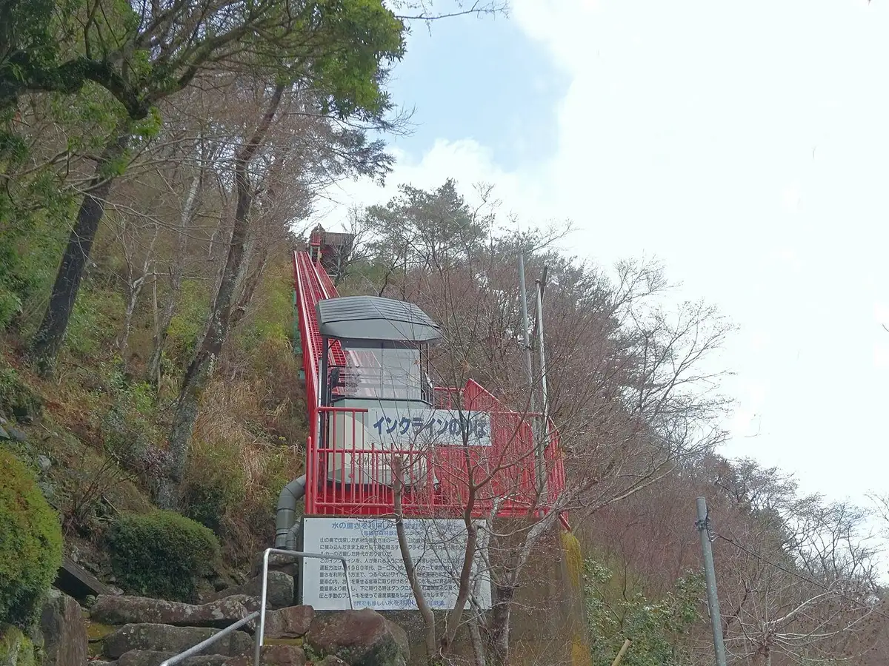
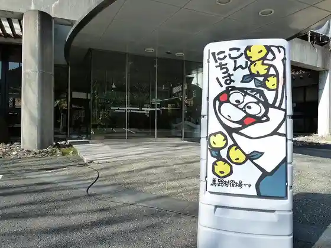
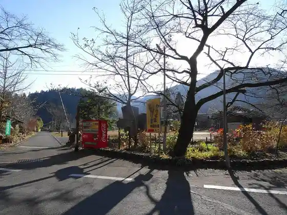
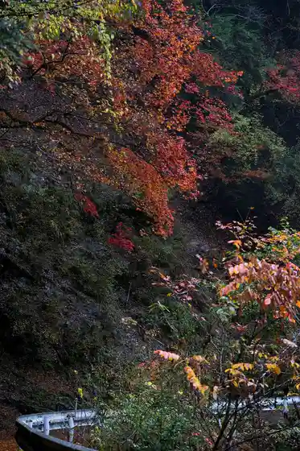
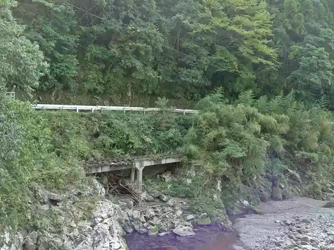

Umaji, Kochi
Umaji · Kochi
Umaji
Highlighted on the Kochi map.

Stay
Umaji Onsen
Dining
Yamanami Shokudo
Yanase no Shokudo Sugi no Ie
Umaji Onsen Resutoran
Onsen
Umaji Onsen Public Bath
Experience
Umaji Shinrintetsudo Josha Experience
Sights
Umaji Inku Line
Umaji Town Hall

Yanase Maruyama Park

Nishikawa Gorge

Yanase Shinrintetsudo

Yanase Damu Mizumi
Tengumori